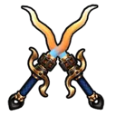

The Murder Two
Dual Wield · Tier 7 · Level 21
Unexpectedly clumsy in the hands during training. When the time comes for dark deeds however, they join their wielder in a dance of death.
Stats
Attack
350
Economy
Value
135,000
Crafting time
2h 40min
Merchant XP
46,500
Workers: Veteran 12, Blacksmith 14
Recipe


Blueprint milestones
7
Crafting time -40%
18
-1 Swift Blade
32
Unlocks blueprint: Roland's Own
50
Value +25%
80
Quality chance +1